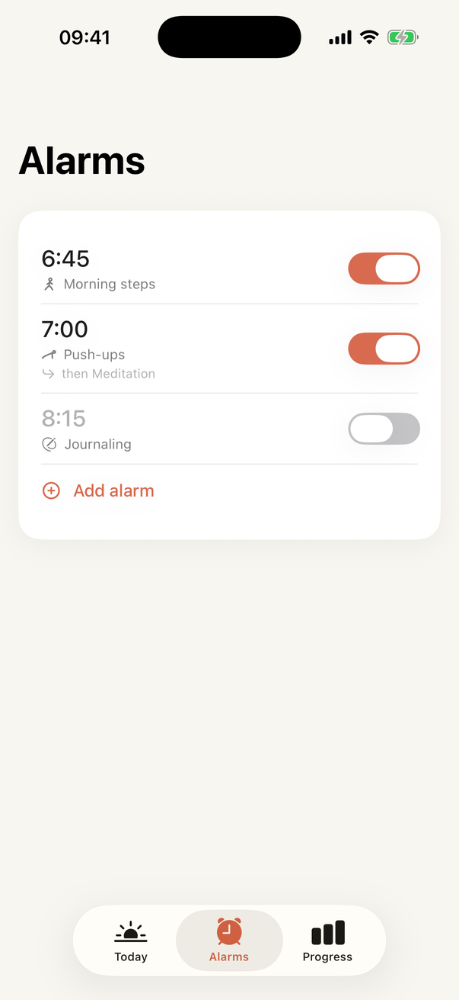

First Light › No-snooze alarm app
Most alarm apps have one big button, and it's snooze. First Light doesn't have one. It has a mission, and the alarm keeps coming back until the mission is done.
Plenty of alarm apps let you switch snooze off. What they cannot do is stop you tapping Stop and going back to sleep, which is snoozing with extra steps. First Light takes a different line. Tapping Stop quiets the alarm for ninety seconds, and then it rings again: five more times across the next ten minutes. Nothing you tap ends the morning. Only finishing the mission you set the night before does.

A 2025 analysis of three million nights of sleep data found the snooze button pressed on 56% of mornings, and 45% of people snoozing on more than 80% of theirs, losing around twenty minutes a day. Those people were not sleeping through the alarm. They heard it, chose snooze, and heard it again. The problem was never volume. It was that the choice was being made by a brain in the first minute of sleep inertia, when judgement is at its worst all day.
You cannot fix that decision by making it louder or more annoying. You fix it by not asking that brain to decide. A mission alarm moves the decision to the night before and replaces the morning choice with a behaviour: take the photo, walk the steps, do the set. By the time the behaviour is done, so is the grogginess, and staying up stops being an act of will.
Each alarm has one mission, chosen when you set it, sized by you.
Timed missions begin with a photo of the thing you are about to do and then run a timer you cannot skip. The floor is a couple of minutes. The camera missions hand over to a timer if they cannot see you. The alarm is strict about starting and forgiving about everything after that.
First Light uses AlarmKit, Apple's alarm framework in iOS 26. That is what lets it ring at full ringtone volume through Silent mode and any Focus, show on the Lock Screen and Dynamic Island, and come back reliably after you tap Stop. It is also why the app is iPhone only for now: the promise depends on the platform keeping it.
The app asks how it went: reps, time, or nothing, with yesterday's number beside it. Your streak grows, your level climbs, and the alarm re-arms for tomorrow. After three mornings in a row it will offer a second mission the moment you finish the first, which is how a no-snooze alarm turns into a morning routine without ever asking you to plan one.
There is a Stop button, and it quiets the alarm for ninety seconds. Then it rings again, five more times across the next ten minutes. Nothing you tap ends the morning; only finishing the mission does. In practice that means the alarm is done when you have taken the photo of your journal, walked the steps, or finished the push-ups you set the night before.
You can switch any alarm off before it rings, the same as the Clock app. Once it is ringing, the way out is the mission, and every mission has a floor of a couple of minutes or a timer fallback, so the way out is never far.
Yes. First Light is built on Apple's alarm system in iOS 26, the same one the built-in Clock uses. It rings at your ringtone volume through Silent mode and any Focus.
A small thing you do instead of snoozing. Push-ups, squats, morning steps, yoga, handstand practice, journaling, reading ten pages, meditation, Bible reading, prayer, or one you build yourself. You set how long the night before.
Loudness gets you awake; it does not keep you up. The snooze decision is made by a groggy brain in the first minute after waking, and volume does nothing about that. A mission replaces the decision with a behaviour.
One week free, then £5.99 a month or £39.99 a year. No free tier and no locked features. If a payment ever fails, an alarm you have already set keeps ringing for 48 hours.
Not yet. First Light depends on iOS 26's alarm system, which is what makes it reliable. It requires an iPhone on iOS 26.
The app is with Apple for review. Leave your address and you'll get one email when it's live, and nothing else.
Get one email when it's live